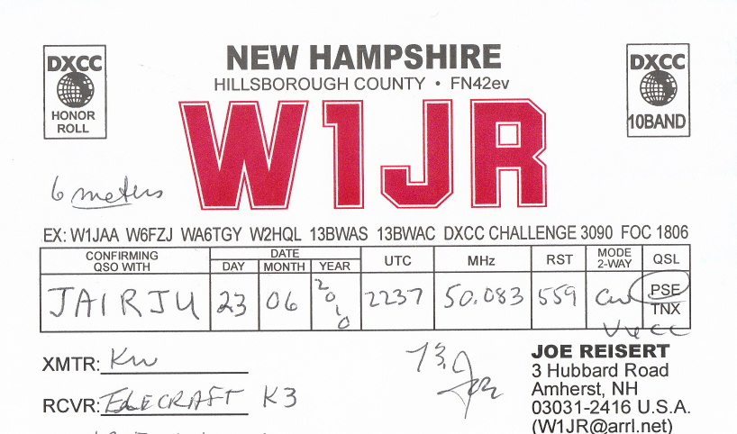
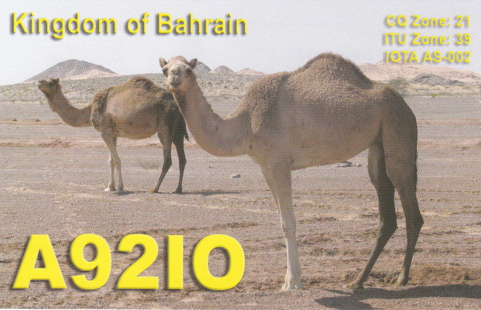
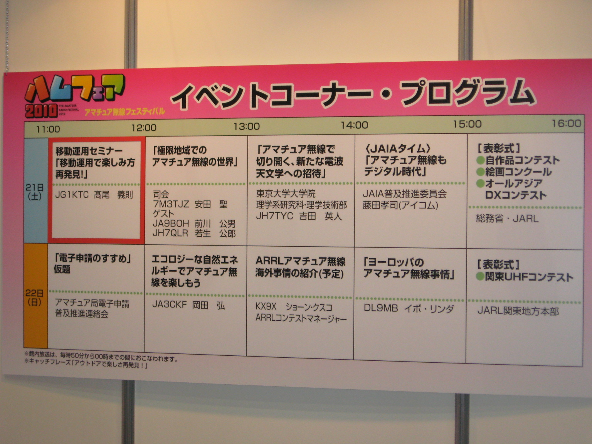
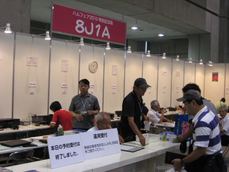
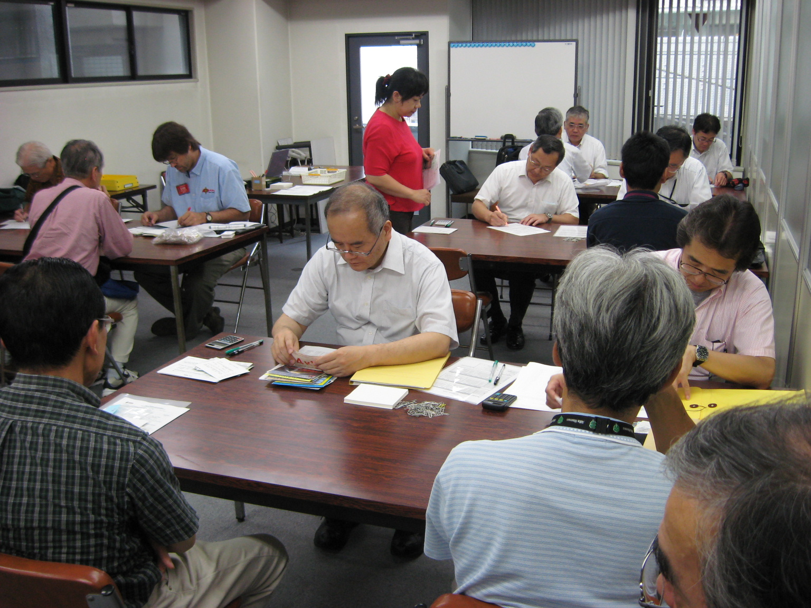

Flash ! DX


  |
|
|
|
  |
|
|
[Back Issues Aug.2010]
TIME:UTC(JST-09:00)
Report from JA1RJU(PM95sq)
31.Aug.2010(15:00c)
BV2YA/b 08:45- 50.001 CW Beacon
(JA6YBR/b 08:45- 50.017 CW Beacon Miyazaki)
(JR6YAG/b 08:45- 50.038 CW Beacon Okinawa)
BV2YA/b 13:30- 50.001 CW Beacon
Report from JA1RJU(PM95sq)
30.Aug.2010(15:00c)
DU1EV/B 09:30- 50.008 CW Beacon
Report from JA1RJU(PM95sq)
29.Aug.2010(15:00c)
Report from JA1RJU(PM95sq)
28.Aug.2010(15:00c)
Report from JA1RJU(PM95sq)
27.Aug.2010(15:00c)
DU7/PA0HIP 10:12 50.110 CW CQ
Report from JA1RJU(PM95sq)
26.Aug.2010(15:00c)
BV2YA/b 02:45- 50.001 CW Beacon
BV2YA/b 07:40- 50.001 CW Beacon
(JR6YAG/b 08:55- 50.038 CW Beacon Okinawa)
DU1EV/B 09:14- 50.008 CW Beacon
DU7/PA0HIP 09:45 50.105 CW CQ 599
Report from JA1RJU(PM95sq)
25.Aug.2010(15:00c)
Report from JA1RJU(PM95sq)
24.Aug.2010(15:00c)
Report from JA1RJU(PM95sq)
23.Aug.2010(15:00c)
BV2YA/b 05:00- 50.001 CW Beacon
(JR6YAG/b 05:00- 50.038 CW Beacon Okinawa)
Report from JA1RJU(PM95sq)
22.Aug.2010(15:00c)
◎ 2010 The Amateur Radio Festival(東京ビッグサイト西2ホール)
21.Aug.2010(15:00c)
◎ 2010 The Amateur Radio Festival(東京ビッグサイト西2ホール)



Report from JA1RJU(PM95sq)
20.Aug.2010(15:00c)
BV2YA/b 03:50- 50.001 CW Beacon
BV2YA/b 08:18- 50.001 CW Beacon
Report from JA1RJU(PM95sq)
19.Aug.2010(15:00c)
|
◎ 今週末(8/21-22日)はいよいよハムフェア2010が始まる。
  今年も恒例のDXCCの"フィールドチェック"が、巣鴨のJARL事務局(3F・会議室)で始まった。 事務局での申請受付は8/19-20日の両日で、ハムフェアの会期中の8/21-22日の両日は有明の会場で行われる。 今年はARRLからKX9X・ショーン・クスコ氏が初めて来日してJARLの担当者を補佐してチェック作業を行う。 《 写真：事務局でのフィールドチェックの模様。右は初来日のKX9X・Sean Kutzko氏 》 |
Report from JA1RJU(PM95sq)
18.Aug.2010(15:00c)
BV2YA/b 02:50- 50.001 CW Beacon
BU2AV 04:59 50.113 CW CQ
BV2YA/b 06:20- 50.001 CW Beacon
BT4EXPO 10:15 50.120 CW QSL via BA4EC (direct)
Report from JA1RJU(PM95sq)
17.Aug.2010(15:00c)
BV2YA/b 08:45- 50.001 CW Beacon
DU1EV/B 08:45- 50.008 CW Beacon
DU1EV/B 09:20- 50.008 CW Beacon strong!
Report from JA1RJU(PM95sq)
16.Aug.2010(15:00c)
BV2YA/b 07:55- 50.001 CW Beacon
(JA6YBR/b 07:55- 50.017 CW Beacon Miyazaki)
Report from JA1RJU(PM95sq)
15.Aug.2010(15:00c)
BV2YA/b 04:40- 50.001 CW Beacon
Report from JA1RJU(PM95sq)
14.Aug.2010(15:00c)
XV9DT 01:53 50.098 CW CQ
Report from JA1RJU(PM95sq)
13.Aug.2010(15:00c)
BV2YA/b 08:20- 50.001 CW Beacon
BV2YA/b 13:43- 50.001 CW Beacon
Report from JA1RJU(PM95sq)
12.Aug.2010(15:00c)
Report from JA1RJU(PM95sq)
11.Aug.2010(15:00c)
BV2YA/b 06:35- 50.001 CW Beacon
Report from JA1RJU(PM95sq)
10.Aug.2010(15:00c)
BV2YA/b 05:00- 50.001 CW Beacon
BV2YA/b 08:58- 50.001 CW Beacon
Report from JA1RJU(PM95sq)
06-09.Aug.2010(15:00c)
◎8/6～8/9日のDX Reportは休止します(Guangzhou China FCC Exam Session)
Report from JA1RJU(PM95sq)
05.Aug.2010(15:00c)
DU1EV/B 01:25- 50.008 CW Beacon
Report from JA1RJU(PM95sq)
04.Aug.2010(15:00c)
Report from JA1RJU(PM95sq)
03.Aug.2010(15:00c)
Report from JA1RJU(PM95sq)
02.Aug.2010(15:00c)
(JA6YBR/b 00:50- 50.017 CW Beacon Miyazaki)
BV2YA/b 01:12- 50.001 CW Beacon
Report from JA1RJU(PM95sq)
01.Aug.2010(15:00c)
XV9DT 03:12 50.098 CW CQ
BV2YA/b 04:20- 50.001 CW Beacon
XV9DT 04:20 50.098 CW CQ still good
BV2YA/b 08:20- 50.001 CW Beacon
HL1IBG 08:25 50.091 CW CQ